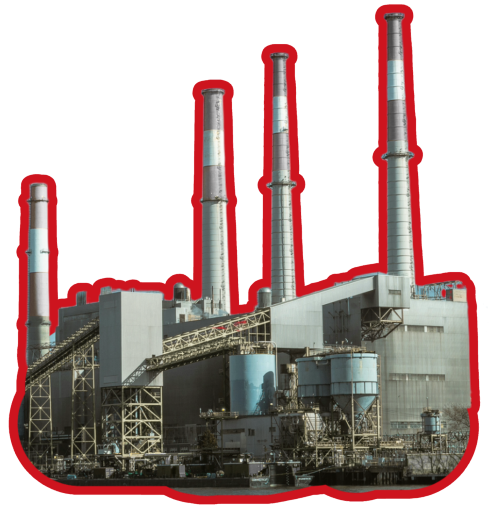

The Fast Fashion Impact
In 2023, the fast fashion industry was estimated to be worth $122.98 billion and is expected to reach $197.5 billion by 2028. At its core, fast fashion is the production of low-quality clothes that mimic popular-styles and trends sold at rock-bottom prices. This makes it easy for consumers to purchase stylish items, which promotes frequent shopping and quick turnovers in trends and fashion collections. The main goal of fast fashion is to essentially get people to spend more money on clothes they use for shorter times
Today, we will be examining the social, environmental and ethical impact of the 5 most dominant fast fashion brands of today, Shein, Forever21, Zara, H&M and Uniqlo.


Let’s zoom out and see where these brands factories are located to see if we can identify any patterns.
FAR FROM THE STOREFRONT
Fast fashion may be sold in polished malls and online storefronts, but its production network stretches far beyond where most people shop. This map reveals where our featured brands manufacture across the globe. A strong cluster appears across Asia, where brands rely on established manufacturing networks, lower labour costs, and weaker worker protections to produce clothing at scale.


What about the social apsect of the issue?
THE SOCIAL IMPACT
SEW, DO THESE ISSUES EVEN MATTER TO CONSUMERS?
Some text
Do consumers buy more from brands with bad labour conditions?
This visualization shows that higher labour risks doesn’t discourage purchasing, with some of the most successful brands also having the highest labour risk score.
Does the general public's opinion of these brands reflect their ethics?
This visualization compares each brands' average ethical rating with its average public sentiment score, It really shows whether brands that although these brands have poor ethical ratings, their social standing remains unaffected.